첫 번째 막은 Needs입니다. 우리가 임의로 정한 방향이 아니라, 이 리뉴얼이 처음부터 가져야 했던 것에서 출발하겠습니다. 관계, 흔적, 그리고 측정 가능한 효과. 이 세 단어를 기억해 주십시오. 마지막 장까지 이 세 단어로 돌아옵니다.
1막 · Needs
리뉴얼이 가져야 할 세 가지
NEEDS 01
캐릭터를 아는 경험에서 관계를 맺는 경험으로
공식 채널이 소개하는 PEPPO를 사용자가 직접 체험하는 접점으로 확장한다. 보고 읽는 캐릭터가 아니라, 함께 무언가를 한 캐릭터.
NEEDS 02
내 흔적이 PEPPO의 세계를 바꾸고 현실에도 영향을 미친다
참여의 누적이 월드의 변화와 IP의 성장으로 이어지고, 그것이 다시 다음 방문의 이유가 된다.
NEEDS 03
브랜드 브릿징 · 단계별 확장 · 기대효과와 KPI
BULDAK ↔ PEPPO ↔ USER 를 잇는 구조, 작게 시작해 넓히는 확장안, 그리고 검증 가능한 지표.
유지하는 원칙 비로그인 입장·저장 시 로그인 / 1인칭·PEPPO 동행 / 탐색 후 불로 복귀 / 익명 운영·소각 원문 비저장
PEPPO WORLD / RENEWAL PROPOSAL · 03
SCRIPT · 031막 Needs → 세 가지
세 가지를 풀어 보면 이렇습니다. 첫째, 캐릭터를 아는 경험에서 관계를 맺는 경험으로. 둘째, 내가 남긴 흔적이 PEPPO의 세계를 바꾸고 현실에도 영향을 미칠 것. 셋째, 브랜드와 캐릭터와 사용자를 잇는 구조, 작게 시작하는 확장안, 그리고 검증 가능한 지표. 아래의 원칙들 — 비로그인 시작, PEPPO 동행 시점, 허브 복귀, 익명 운영 규정 — 은 이번 제안에서도 한 글자도 바꾸지 않았습니다.
1막 · Needs → Response
열세 가지 Needs, 열세 가지 Response
NeedsResponse
N01
캐릭터를 아는 경험 → 관계를 맺는 경험
→
관계의 첫 단계 = 같은 불 앞에 함께 앉기
N02
공식 채널 소개 → 직접 체험하는 접점
→
URL 하나 · 로그인 0 · 설치 0, 10초 안에 불 앞
N03
내 흔적이 PEPPO 세계와 현실을 바꾼다
→
장작 → 불티 → 별. 별 마일스톤이 현실 보상으로
N04
컨텐츠 방향성 — 해소 · 공감 · 의외성 · 사건
→
4축 유지. 해소·공감 먼저, 의외성·사건은 숲길과 시간 이벤트로
N05
Real World → PEPPO Filter → PEPPO World
→
하루의 스트레스가 종이 장작으로, 태운 흔적이 별자리로
N06
비로그인 시작, 저장 순간 로그인 가치
→
유지. 저장할 가치 = 내 별자리 · 캠퍼 · 캠프 네임
N07
공간 구조 · 이스터에그 · PEPPO 반응 · 허브 복귀
→
캠프파이어 = 허브, 모든 오솔길은 불로 돌아온다
N08
주요 Interaction & Content
→
텍스트 0, 행동 4: 장작 넣기 · 바람 보내기 · 불 돋우기 · 라면 끓이기
N09
Community / 대나무숲 구조
→
글 없는 공감 — 바람 보내기 집계가 불 크기로 보인다
N10
Personalization / Login / 기록
→
Guest → Login → My Camp. 캠퍼 · 별자리 · 공유 카드가 기록
N11
Brand Bridging 구조
→
채널 브릿지 8개 — 릴스 · 숏츠 · 블로그 · 패키지 ↔ 월드
N12
MVP 및 단계별 확장안
→
캠프파이어 1개로 검증 → 스포크 → 숲길과 현실
N13
기대효과 / KPI 초안
→
플라이휠 6단계 → 3층위 10개 지표
PEPPO WORLD / RENEWAL PROPOSAL · 04
SCRIPT · 04요구 → 응답
열세 가지 요구에 대한 응답표입니다. 발표에서는 관계·흔적·효과의 세 축을 중심으로 보시고, 세부 항목은 검토 자료로 남기겠습니다.
두 번째 막, Signal. Needs에 답하기 전에 바깥을 한 번 보겠습니다. 지금 사람들은 어디에 모이는가. 2026년 가을, 꽤 분명한 신호가 하나 있었습니다.
2막 · Signal · 시장 신호
로그인도 채팅도 없는 공간에 사흘 만에 60만 명
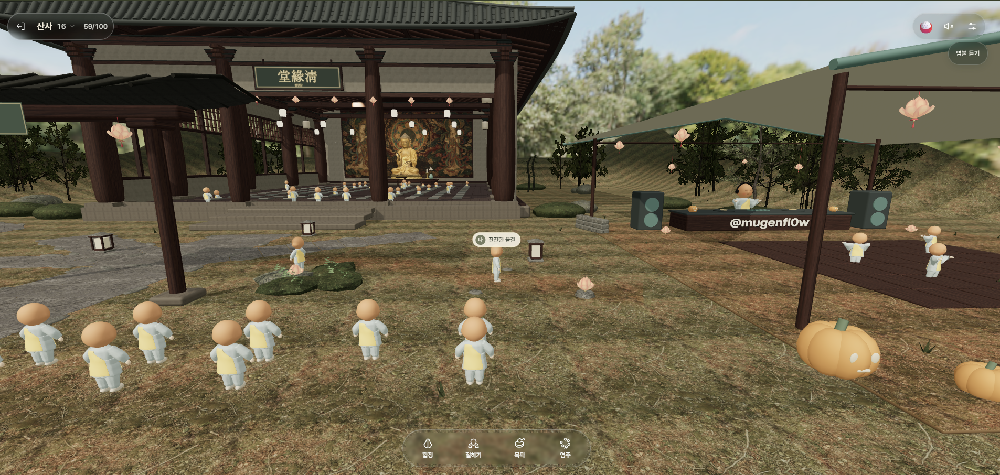
REF-01 참고 사례 실제 화면 () images/REF-01.png 로 교체
참고 사례 실제 화면 · 방 정원 100명, 행동 버튼 4개, 채팅 없음
60만개인이 만든 가상 휴식 공간 1곳의 공개 사흘 방문 (제작자 집계)
100×100방 100개 × 정원 100명 — 피크에 만석, 입장 대기 발생
300+며칠 사이 등장한 유사 공간 (사우나 · 낚시터 · 캠핑장 · 루프탑…)
0로그인 · 설치 · 채팅 — 아무것도 요구하지 않았다
사람들이 원한 것은 콘텐츠가 아니라 ‘지금 여기 누군가 함께 있다’는 기척이었다.
PEPPO WORLD / RENEWAL PROPOSAL · 06
SCRIPT · 062막 Signal → 숫자
개인이 만든 가상 휴식 공간 한 곳에 공개 사흘 만에 60만 명이 다녀갔습니다. 방 100개에 정원 100명, 피크에는 만석이 되어 대기가 생겼고, 며칠 사이 비슷한 공간이 300개 넘게 생겼습니다. 그런데 이 공간이 요구한 것은 0이었습니다. 로그인도, 설치도, 채팅도 없었습니다. 사람들이 원한 것은 콘텐츠가 아니라 ‘지금 여기 누군가 함께 있다’는 기척이었습니다.
2막 · Signal · 착안점
왜 통했나 — 다섯 가지 구조
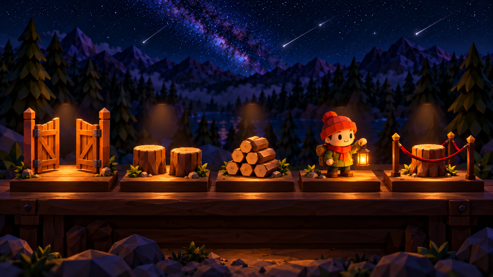
IMG-05 다섯 가지 이유 — 오브제 5종 images/IMG-05.png 로 교체
무허들 URL 하나로 10초 안에 ‘내 캐릭터’
함께 있음 채팅 없이도 혼자가 아닌 감각
반복 행위 짧고 반복 가능한 동작 + 누적감
공유 아바타 같은 몸, 다른 소품 → 캡처 · 밈
희소성 1인 1석, 정원, 대기 — 지금 들어갈 이유
우리가 가져올 것은 이 다섯 가지 구조다. 소재와 정서는 가져오지 않는다.
PEPPO WORLD / RENEWAL PROPOSAL · 07
SCRIPT · 07숫자 → 왜 통했나
왜 통했는지를 구조로 뜯어 보면 다섯 가지입니다. 허들이 없고, 함께 있고, 짧은 행위가 반복되고, 아바타가 공유되고, 자리가 희소합니다. 여기서 중요한 선을 긋겠습니다. 우리가 가져올 것은 이 다섯 가지 ‘구조’뿐입니다. 소재와 정서는 가져오지 않습니다.
2막 · Signal · 그러나
형식은 하루면 복제된다 — 참고하되 닮지 않는다
IMG-04 수백 개의 작은 가상 휴식 공간 images/IMG-04.png 로 교체
관찰
화제가 된 지 며칠 만에 같은 형식의 공간이 300개 넘게 생겼다. 소프트웨어 자체는 더 이상 해자가 아니다.
판단
따라 만들면 우리는 301번째 복제품이 된다. 복제할 수 없는 것은 단 둘 — 14년을 쌓은 브랜드 정체성, 그리고 월드 밖 현실로 돌아오는 보상.
그래서
구조 다섯 가지만 배우고, 무대 · 행위 · 정서 · 시간 · 흔적 다섯 가지는 전부 불닭의 것으로 다시 짓는다. 개인 개발자가 하루 만에 따라 할 수 있는 것은 하나도 남기지 않는다. 그 답이 다음 막이다.
PEPPO WORLD / RENEWAL PROPOSAL · 08
SCRIPT · 08왜 통했나 → 그러나
왜냐하면 형식은 하루면 복제되기 때문입니다. 300개가 그 증거입니다. 따라 만들면 우리는 301번째 복제품이 됩니다. 복제할 수 없는 것은 단 둘 — 14년을 쌓은 브랜드 정체성, 그리고 월드 밖 현실로 돌아오는 보상입니다. 그래서 결론은 이렇습니다. 구조 다섯 가지만 배우고, 무대·행위·정서·시간·흔적 다섯 가지는 전부 불닭의 것으로 다시 짓는다. 개인 개발자가 하루 만에 따라 할 수 있는 것은 하나도 남기지 않는다. 그 답이 세 번째 막입니다.
세 번째 막, Answer. 우리의 답은 밖에서 가져오지 않고 안에서 꺼냈습니다. 삼양 불닭의 정체성 ‘태우다’를, ‘함께’로 확장합니다.
3막 · Answer · 아이덴티티
불닭은 이미 ‘태우다’의 브랜드다 — 우리는 그 동사에 ‘함께’를 붙인다
BULDAK · 브랜드가 이미 가진 것
맵다도전 — 한 입이 시험이다
견딘다땀과 눈물, 그래도 멈추지 않는다
푼다해소 — 다 먹고 나면 속이 뚫린다
함께 먹는다챌린지 문화 — 혼자 먹는 불닭보다 함께 찍는 불닭
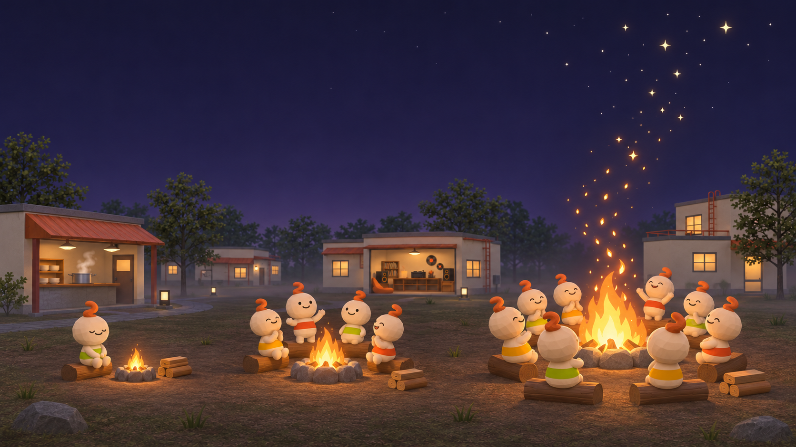
IMG-02 세 개의 불 images/IMG-02.png 로 교체
브랜드의 동사
태우다
매움을 태우고, 스트레스를 태우고, 밤을 태운다
PEPPO CAMP · 우리가 붙이는 것
장작맵다 → 스트레스 하나를 접어 불에 넣는다
함께 앉는다견딘다 → 같은 불 앞 100명, 혼자가 아니다
별이 남는다푼다 → 태운 것이 하늘에 흔적으로 남는다
공유 카드함께 먹는다 → “오늘 N명과 함께 태웠어요”
태우다 × 함께 현재의 소각장은 방향이 맞다. 빠진 것은 ‘혼자 태운다’는 점 하나 — 불닭이 챌린지로 증명한 ‘함께’를 붙이면, 불닭의 불이 PEPPO의 불이 되고 사용자의 불이 된다.
PEPPO WORLD / RENEWAL PROPOSAL · 10
SCRIPT · 10브랜드 → 경험
불닭의 동사는 태우다입니다. 여기에 함께를 붙입니다. 매운 하루를 혼자 견디는 대신, 같은 불 앞에서 각자의 마음을 놓고 그 흔적을 별로 남깁니다.
IMG-07 큰 불 앞 실루엣 images/IMG-07.png 로 교체
3막 · Answer · 컨셉
밤의 캠프, 불 앞의 월드
혼자 온 사람들이 같은 불 앞에 앉는다. 각자의 스트레스를 장작으로 접어 넣는다. 불은 모일수록 커지고, 태운 것은 별이 되어 하늘에 남는다. 별이 모이면, 현실이 바뀐다.
장작 넣기바람 보내기불멍 모드태운 것은 별이 된다밤 10시 불 피우기
PEPPO WORLD / RENEWAL PROPOSAL · 11
SCRIPT · 11아이덴티티 → 컨셉 선언
그래서 컨셉은 이렇게 한 문장이 됩니다. 밤의 캠프, 불 앞의 월드. 혼자 온 사람들이 같은 불 앞에 앉습니다. 각자의 스트레스를 장작으로 접어 넣습니다. 불은 모일수록 커지고, 태운 것은 별이 되어 하늘에 남습니다. 그리고 별이 모이면, 현실이 바뀝니다. 아래 다섯 개 키워드는 앞으로 다섯 번째 막에서 하나씩 보여드릴 요소들입니다.
3막 · Answer · 핵심 컨셉과의 정합
Real World → PEPPO Filter → PEPPO World, 그대로 통한다
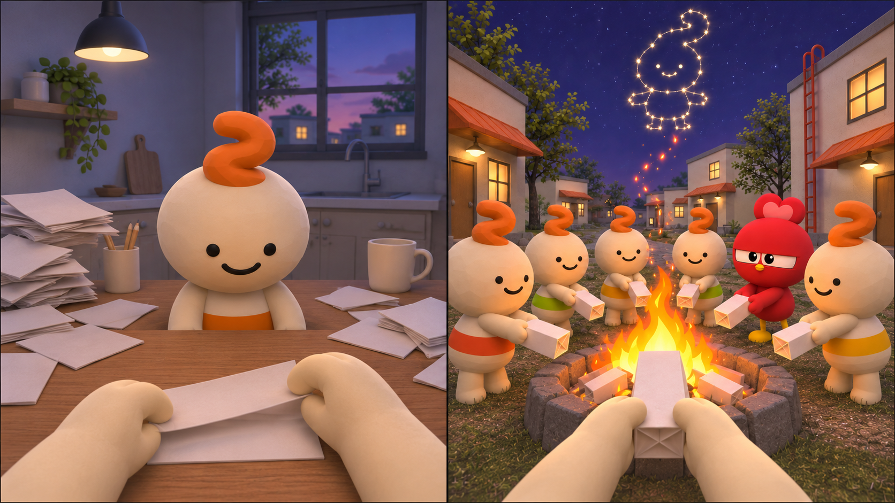
IMG-08 Real World → PEPPO Filter → PEPPO World images/IMG-08.png 로 교체
REAL WORLD
마음에 쌓인 하루
종이를 꺼내 접는 익숙한 행동이 월드의 입구가 된다.
PEPPO FILTER → WORLD
함께 태우고, 별로 남긴다
불 앞에 놓는 순간 개인의 해소가 공동의 흔적으로 이어진다.
PEPPO WORLD / RENEWAL PROPOSAL · 12
SCRIPT · 12현실 → 월드
현실의 스트레스를 종이에 담아 접습니다. PEPPO World에서는 그 종이를 함께 불에 놓습니다. 태운 흔적이 별로 남는 순간, 혼자 견디던 하루가 함께 머무는 경험으로 바뀝니다.
네 번째 막, Principles. 복제되는 시장에서 우리 것으로 남으려면 끝까지 지켜야 할 세 가지가 있습니다.
4막 · Principles · 세 가지 원칙
불은 살아 있고, 말은 없고, 태운 것은 남는다
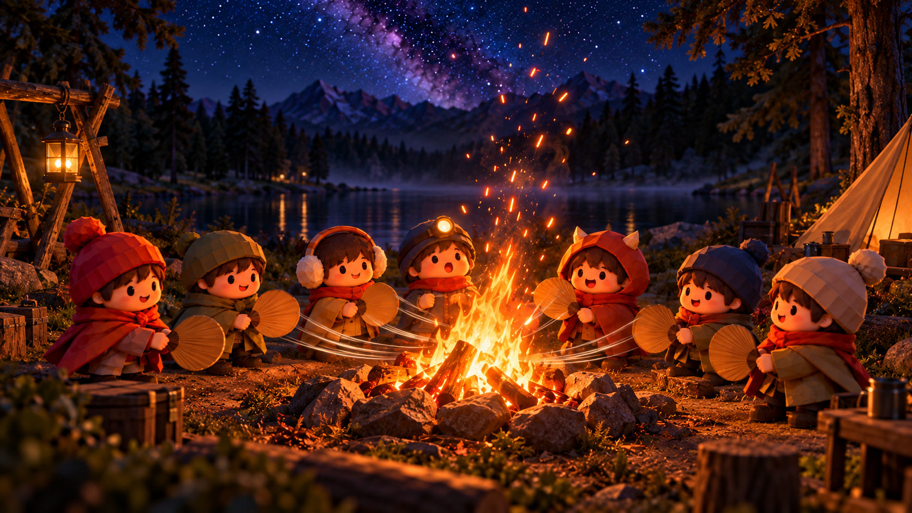
IMG-21 바람이 불을 키운다 images/IMG-21.png 로 교체
원칙 01
불은 살아 있다
참여자 수와 장작이 불의 크기 · 색을 바꾼다. 같은 공간이 시간과 사람에 따라 다른 공간이 된다. 불이 곧 ‘함께 있음’의 계기판.
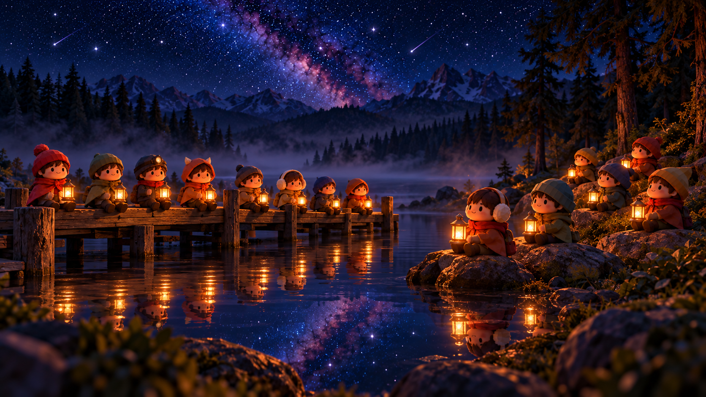
IMG-11 호숫가 자리 — 같은 색 랜턴 images/IMG-11.png 로 교체
원칙 02
말은 없다
채팅 · 공개 글 없음. 행동 4개와 토스트 한 줄만. 안전하고, 운영 부담이 0이고, 그래서 머문다.
IMG-15 태운 것은 별이 된다 images/IMG-15.png 로 교체
원칙 03
태운 것은 남는다
장작 하나 = 별 하나. 개인의 별자리, 캠프의 밤하늘, 브랜드의 마일스톤. ‘내 흔적이 세계를 바꾼다’의 구현.
PEPPO WORLD / RENEWAL PROPOSAL · 14
SCRIPT · 144막 Principles → 세 원칙
첫째, 불은 살아 있다. 참여자 수와 장작이 불의 크기와 색을 바꿉니다. 같은 공간이 시간과 사람에 따라 다른 공간이 됩니다. 둘째, 말은 없다. 채팅도 공개 글도 없고, 행동 네 개와 토스트 한 줄뿐입니다. 안전하고, 운영 부담이 0이고, 그래서 머뭅니다. 셋째, 태운 것은 남는다. 장작 하나가 별 하나가 되어 개인의 별자리, 캠프의 밤하늘, 브랜드의 마일스톤으로 쌓입니다. 두 번째 Needs ‘내 흔적이 세계를 바꾼다’의 구현입니다.
다섯 번째 막, Elements. 원칙을 실제 요소로 내려오겠습니다. 하나의 캠프, 네 개의 자리, 네 개의 행동, 하루의 시간, 그리고 PEPPO.
5막 · Elements · 월드 구조
허브는 불, 모든 오솔길은 불로 돌아온다
IMG-09 플레이어 눈높이에서 보는 동네 동선 images/IMG-09.png 로 교체
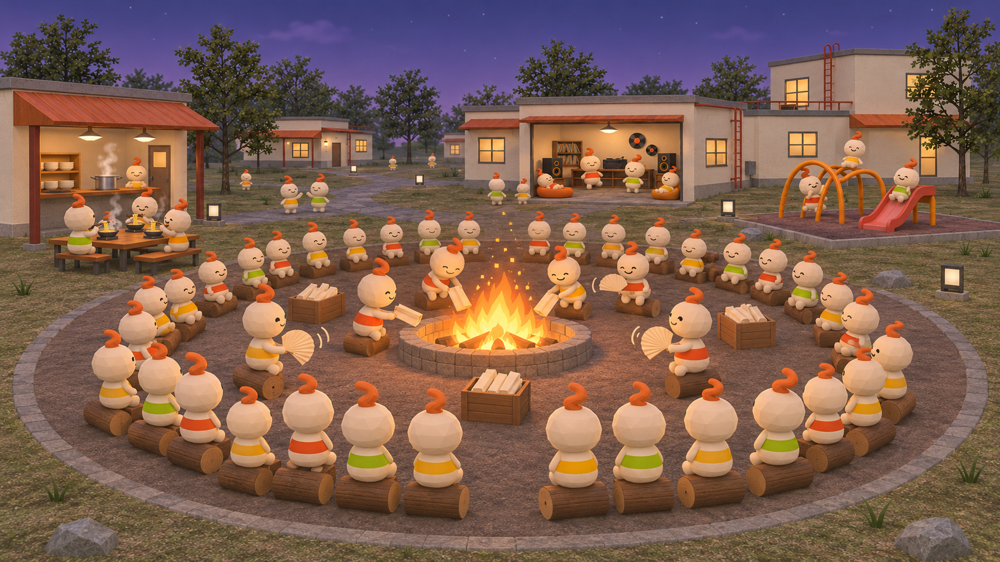
IMG-10 메인 캠프파이어 — 통나무 자리 100석 images/IMG-10.png 로 교체
MVP · 허브
메인 캠프파이어 — 캠프사이트 N개 × 통나무 자리 100석. 행동 4개와 사운드. 모든 것의 중심.
IMG-11 호숫가 자리 — 같은 색 랜턴 images/IMG-11.png 로 교체
PHASE 2 · 스포크
호숫가 자리(글 없는 공감) · 야식 자리(브랜드 플레이) · 언덕 무대(밤 10시 이벤트).
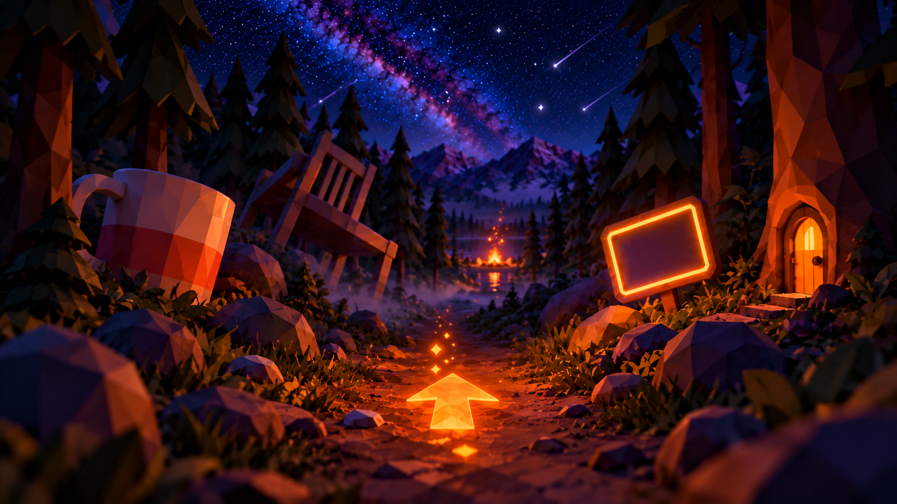
IMG-13 숲길 탐색 노드 — 이스터에그 images/IMG-13.png 로 교체
PHASE 2–3 · 길
숲길 탐색 노드 — 로드뷰 · 화살표 이동과 이스터에그. 어디서든 불빛이 보이고, 돌아올 수 있다.
PEPPO WORLD / RENEWAL PROPOSAL · 16
SCRIPT · 165막 Elements → 월드 구조
월드의 구조입니다. 허브는 불입니다. MVP에서는 메인 캠프파이어 하나만 만듭니다. 2단계에서 호숫가 자리, 야식 자리, 언덕 무대가 스포크로 붙고, 2–3단계에서 숲길 탐색 노드가 길이 됩니다. 어디로 가도 멀리 불빛이 보이고, 모든 오솔길은 불로 돌아옵니다. 기존의 ‘탐색 후 허브 복귀’ 원칙 그대로입니다.
5막 · 공간 01 · 메인 캠프파이어
통나무 자리 100석, 1인 1석
IMG-10 메인 캠프파이어 — 통나무 자리 100석 images/IMG-10.png 로 교체
구조
불을 중심으로 네 겹의 통나무 자리. 자리가 차면 다음 캠프사이트로, 모두 차면 “대기 중 N명”. 희소성이 화제를 만든다.
불의 상태
참여자 수와 장작 투입량이 불의 크기 · 색을 결정한다. 새벽의 잔불과 밤 10시의 큰 불은 다른 공간처럼 느껴진다.
텍스트
장작에 적는 내용은 선택 · 비공개 · 비저장. 누구도 읽을 수 없고, 불티만 올라간다.
PEPPO WORLD / RENEWAL PROPOSAL · 17
SCRIPT · 17월드 구조 → 공간 01
첫 번째 자리, 메인 캠프파이어. 통나무 자리 100석에 1인 1석입니다. 자리가 차면 다음 캠프사이트로, 모두 차면 ‘대기 중 N명’이 뜹니다. 이 희소성이 화제를 만듭니다. 장작에 적는 내용은 선택이고 비공개이고 저장하지 않습니다. 누구도 읽을 수 없고, 불티만 올라갑니다.
5막 · 공간 02 · 호숫가 자리
말은 없고, 랜턴 색이 같아진다
IMG-11 호숫가 자리 — 같은 색 랜턴 images/IMG-11.png 로 교체
대나무숲의 진화
공개 글 대신 ‘앉기 + 바람 보내기’. 같은 시간에 앉은 사람들의 랜턴이 같은 색으로 맞춰진다 — 공감의 집계가 눈에 보인다.
운영
검수 · 신고 · 개인정보 리스크가 구조적으로 사라진다. 공개되는 것은 이모트 집계뿐.
월드 반영
호숫가 공감 누적이 메인 캠프파이어의 불꽃 레벨(Lv.1–5)을 올린다. ‘집계된 마음을 월드에 반영’을 실시간으로.
PEPPO WORLD / RENEWAL PROPOSAL · 18
SCRIPT · 18공간 01 → 공간 02
두 번째 자리, 호숫가. 기존 대나무숲의 진화형입니다. 공개 글 대신 ‘앉기’와 ‘바람 보내기’만 있습니다. 같은 시간에 앉은 사람들의 랜턴이 같은 색으로 맞춰지면서 공감의 집계가 눈에 보입니다. 검수와 신고, 개인정보 리스크가 구조적으로 사라지고, 호숫가의 공감 누적은 메인 불의 레벨을 올립니다.
5막 · 공간 03 · 야식 자리
불 위에 코펠 하나 — 라면이 끓는 자리
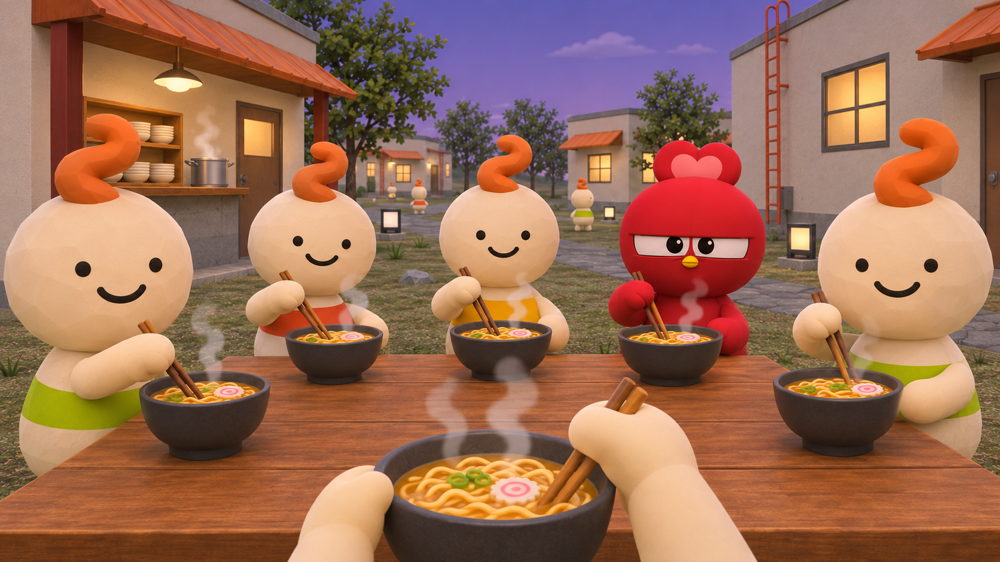
IMG-12 야식 자리 — 불 위의 라면 코펠 images/IMG-12.png 로 교체
불닭먹기 Zone의 계승
모닥불 위 코펠에 불닭을 끓인다. 물이 끓고, 면을 넣고, 소스를 붓는 세 번의 탭. 김이 오르면 주변 캠퍼의 화면에도 매운 김이 번진다.
브랜드 플레이
매움 단계에 따라 국물 색과 김의 양이 바뀐다. 한 젓가락 ‘맵찔이 탈출’에 성공하면 뱃지. 제품 라인업이 자연스럽게 코펠 옆 소품이 된다.
연결
다 끓이면 메인 불에 보너스 장작. 야식이 허브의 불을 키운다.
PEPPO WORLD / RENEWAL PROPOSAL · 19
SCRIPT · 19공간 02 → 공간 03
세 번째 자리, 야식. 불 위에 코펠 하나를 올리고 라면을 끓입니다. 물이 끓고, 면을 넣고, 소스를 붓는 세 번의 탭. 김이 오르면 주변 캠퍼의 화면에도 매운 김이 번집니다. 기존 불닭먹기 Zone을 계승한 브랜드 플레이이고, 다 끓이면 메인 불에 보너스 장작이 들어갑니다. 재미가 허브의 불을 키웁니다.
5막 · 공간 04 · 숲길 탐색 노드
로드뷰 문법은 숲길에서 산다
IMG-13 숲길 탐색 노드 — 이스터에그 images/IMG-13.png 로 교체
이동 원칙 유지
눈높이 1인칭, 바닥의 화살표 노드로 이동. PEPPO가 앞서 걷는 동행 포지션.
의외성 · 이스터에그
길가에 비현실적으로 큰 머그컵, 뒤집힌 의자, 나무 둥치의 작은 문. 도달하면 PEPPO가 반응하고 도감에 기록된다.
허브 복귀
어느 길에서도 멀리 불빛이 보인다. 탐색이 끝나면 불로 돌아온다 — 길을 잃지 않는 월드.
PEPPO WORLD / RENEWAL PROPOSAL · 20
SCRIPT · 20공간 03 → 공간 04
네 번째 자리, 숲길. 기존의 로드뷰 문법이 사는 곳입니다. 눈높이 1인칭, 바닥의 화살표 노드, PEPPO가 앞서 걷습니다. 길가에는 비현실적으로 큰 머그컵과 뒤집힌 의자 같은 이스터에그가 있고, 도달하면 PEPPO가 반응하고 도감에 기록됩니다. 그리고 어느 길에서도 불빛이 보여 돌아올 수 있습니다.
5막 · 행동
공간에서 함께 하는 네 가지 행동
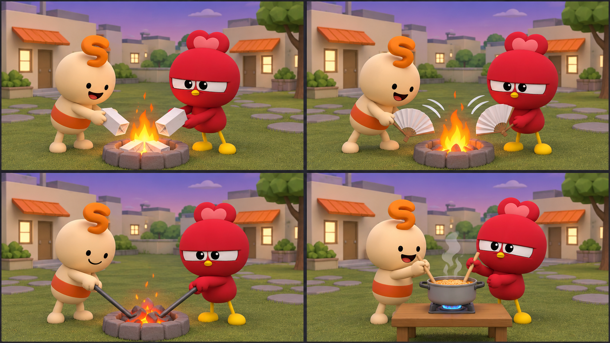
IMG-14 네 가지 손동작 4분할 images/IMG-14.png 로 교체
장작 넣기 스트레스를 접어 불에 놓는다 — 태운 흔적은 내 별자리로.
바람 보내기 부채질로 함께 불을 키운다 — 말 없는 응원.
불 돋우기 부지깽이로 불을 돌본다 — 불꽃과 소리로 반응.
라면 끓이기 코펠을 함께 저으며 머문다 — 불닭의 맛과 소리.
PEPPO WORLD / RENEWAL PROPOSAL · 21
SCRIPT · 21네 개의 자리 → 네 개의 행동
자리 넷을 봤으니 행동 넷입니다. 장작 넣기, 바람 보내기, 불 돋우기, 라면 끓이기. 텍스트 입력은 0입니다. 모든 행동은 ‘4단계 밤바람 님이 장작을 넣었어요’ 같은 토스트 한 줄로만 전달됩니다. 두 번째 원칙 ‘말은 없다’가 UI로 내려온 모습입니다.
5막 · 개인 인터랙션 · 버튼 하나의 브랜드 경험
매운 하루의 열기를, 함께 머무는 온기로
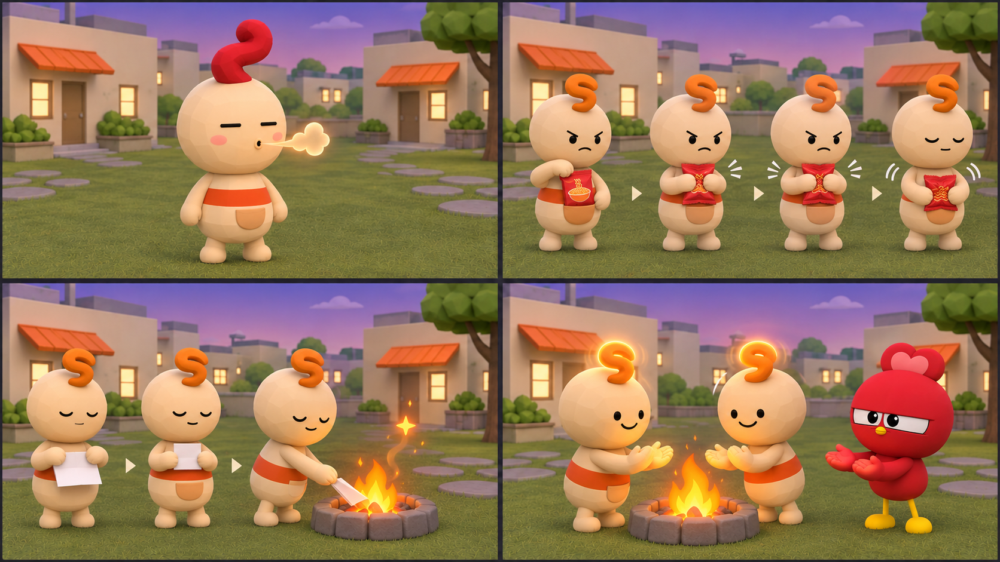
MOTION-01 개인 의식 4종 — 열기 내쉬기 · 오늘을 뿌시기 · 마음 접어 태우기 · 온기 건네기 images/MOTION-01.png 로 교체
기본 플레이는 1인칭 / 전신 이미지는 타인에게 보이는 동작 설명 / 대표 행위: 마음 접어 태우기
주머니에서 불닭 봉지 꺼내기 → 두 번 꾹 → 다시 넣기. “힘들었던 일을 작게 만든다.”
03 · 마음 접어 태우기 — 내려놓기
빈 종이 두 번 접기 → 가슴에 잠깐 품기 → 불에 놓기 → 별 하나. “이 마음을 여기 두고 간다.”
04 · 온기 건네기 — 연결
불 앞에서 온기 담기 → 옆 사람에게 손바닥 펴기 → 함께 머물기. “말없이 네 곁에 있다.”
연타 보상 없음 · 누르기–머무르기–놓기의 호흡 · PEPPO도 같은 속도로 동행. 시간·인원 조건은 가안이며 효과는 검증한다.
PEPPO WORLD / RENEWAL PROPOSAL · 22
SCRIPT · 22공간 행동 → 개인 의식
이 버튼들은 귀여운 동작보다 마음을 다루는 짧은 의식입니다. 열기를 내쉬며 진정하고, 오늘을 뿌시며 해소하고, 마음을 접어 불에 놓고, 남은 온기를 옆 사람에게 건넵니다. 대표 행위는 마음 접어 태우기입니다. 열기 내쉬기는 ㅡㅡ 눈과 붉은 꼬불이로 표현하고 주황색으로 돌아옵니다. 연타 보상 대신 누르고 머물고 놓는 호흡을 둡니다. PEPPO도 옆에서 같은 속도로 함께합니다.
5막 · 핵심 메커니즘
태운 것은 별이 된다
IMG-15 태운 것은 별이 된다 images/IMG-15.png 로 교체
개인
장작 하나 = 불티 하나 = 별 하나. 내가 태운 별들이 이어져 내 별자리가 된다. 저장하려면 로그인.
집단
캠프사이트의 하늘은 그 방 사람들이 태운 모든 별로 채워진다. 자정이 가까울수록 하늘이 빽빽해진다.
현실
월드 전체 별 수가 마일스톤에 닿으면 브랜드가 움직인다 — 신제품 선공개, 시즌 장작 교환권, 캠페인 카피 채택.
PEPPO WORLD / RENEWAL PROPOSAL · 23
SCRIPT · 23행동 → 핵심 메커니즘
그리고 이 모든 행동이 향하는 곳, 핵심 메커니즘입니다. 장작 하나는 불티 하나가 되고 별 하나가 됩니다. 개인에게는 내 별자리, 캠프에게는 그 방의 밤하늘, 브랜드에게는 전체 별 수의 마일스톤입니다. 별 수가 마일스톤에 닿으면 브랜드가 움직입니다. 이것이 두 번째 Needs, ‘흔적이 현실에도 영향을 미친다’의 답입니다.
5막 · 시간 설계 · 돌아올 이유
해 질 녘 입장, 밤 10시 불 피우기, 새벽 리셋
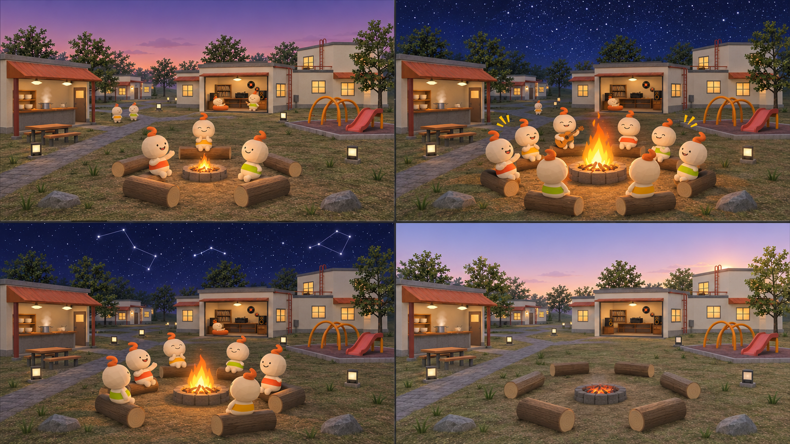
IMG-17 하루의 네 장면 images/IMG-17.png 로 교체
18:00 해 질 녘
캠프가 열린다. 불은 작고 자리는 비어 있다. 먼저 온 사람이 불을 키운다.
22:00 불 피우기
매일 밤 10시, 모든 캠프사이트가 동시에 큰 불을 올린다. ‘함께’가 가장 진한 시간.
00:00 자정
하늘이 별로 가득 찬다. 별자리 선이 이어지고, 오늘의 집계가 확정된다.
05:00 새벽
별이 지고 잔불만 남는다. 하늘은 리셋, 내 별자리는 My Camp에 남는다.
PEPPO WORLD / RENEWAL PROPOSAL · 24
SCRIPT · 24메커니즘 → 시간
별이 쌓이려면 돌아와야 합니다. 그래서 시간을 설계했습니다. 해 질 녘에 캠프가 열리고, 매일 밤 10시에 모든 캠프사이트가 동시에 큰 불을 올립니다. 자정에 하늘이 가득 차고 오늘의 집계가 확정되며, 새벽에 별이 지고 리셋됩니다. ‘밤 10시’라는 약속이 돌아올 이유가 됩니다.
5막 · 불멍 모드 · 사운드
머무는 이유는 소리와 카메라가 만든다
IMG-16 불멍 모드 1인칭 images/IMG-16.png 로 교체
카메라
버튼 하나로 시점이 불 바로 앞으로 내려간다. UI가 사라지고 불꽃만 남는다. 10분을 머물게 하는 화면.
사운드 레이어
장작 타는 소리 · 밤 풀벌레 · 호수 바람 · PEPPO 허밍(선택). 야식 자리에선 보글보글 끓는 브랜드 사운드.
지표로
불멍 모드 평균 체류 시간이 ‘관계’의 선행 지표가 된다. 6막 KPI의 첫 칸.
PEPPO WORLD / RENEWAL PROPOSAL · 25
SCRIPT · 25시간 → 머묾
들어와서 돌아오게 했다면, 머물게도 해야 합니다. 불멍 모드입니다. 버튼 하나로 시점이 불 바로 앞으로 내려가고 UI가 사라집니다. 장작 타는 소리, 풀벌레, 호수 바람, 그리고 야식 자리에서는 보글보글 끓는 소리. 불멍 모드의 평균 체류 시간이 ‘관계’의 선행 지표가 됩니다.
5막 · PEPPO의 역할
PEPPO는 아바타가 아니라 불 지킴이다
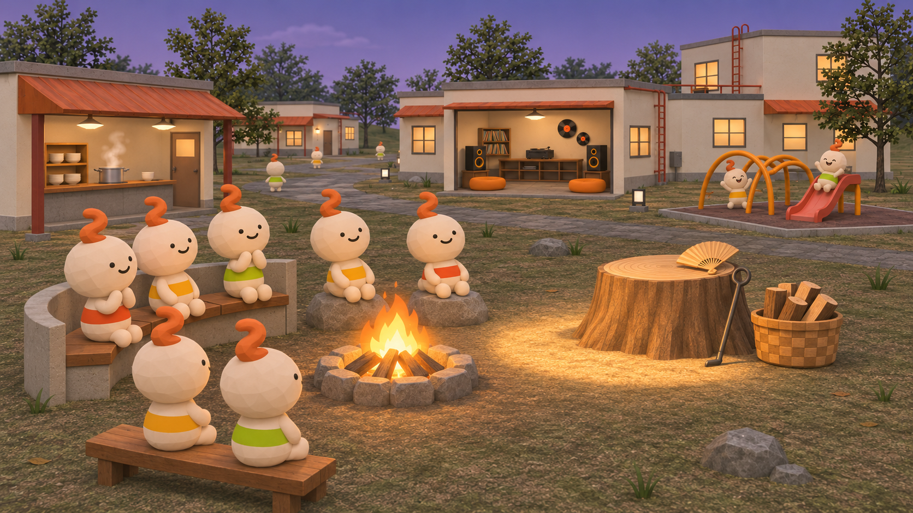
IMG-18 PEPPO의 조건부 등장과 장작 추가 images/IMG-18.png 로 교체
시점 원칙
사용자 눈높이 카메라, PEPPO는 화면 앞쪽의 동행. 사용자가 PEPPO를 ‘조작’하지 않고 PEPPO와 ‘함께’ 있는다.
행동 양식(가안)
불멍 참여자 10명 이상이면 등장해 장작을 더한다. 4명 이상이 동시에 장작 넣기·바람 보내기·불 돋우기·라면 행동을 하면 곁에서 같은 모션으로 참여한다. 인원·동시 판정 시간·등장 쿨다운은 운영 검증 후 확정할 가안.
IP 보호
사용자 아바타는 ‘캠퍼’. PEPPO 본체의 꾸미기 · 변형은 열지 않는다. PEPPO Word는 불 앞에서 한 줄씩 건네는 말로.
PEPPO WORLD / RENEWAL PROPOSAL · 26
SCRIPT · 26머묾 → PEPPO의 역할
이 월드에서 PEPPO는 무엇을 하는가. 아바타가 아니라 불 지킴이입니다. 사용자는 PEPPO를 조작하지 않고 PEPPO와 함께 있습니다. 불멍 참여자 10명 이상이면 장작을 더하고, 4명 이상 같은 행동을 하면 함께 따라 하는 연출을 제안합니다. 인원과 동시 판정, 등장 쿨다운은 가안입니다. PEPPO 본체의 꾸미기나 변형은 열지 않아 IP를 보호합니다.
5막 · 캠퍼 아바타
입장 10초 만에 생기는 ‘내 캠퍼’가 공유를 만든다
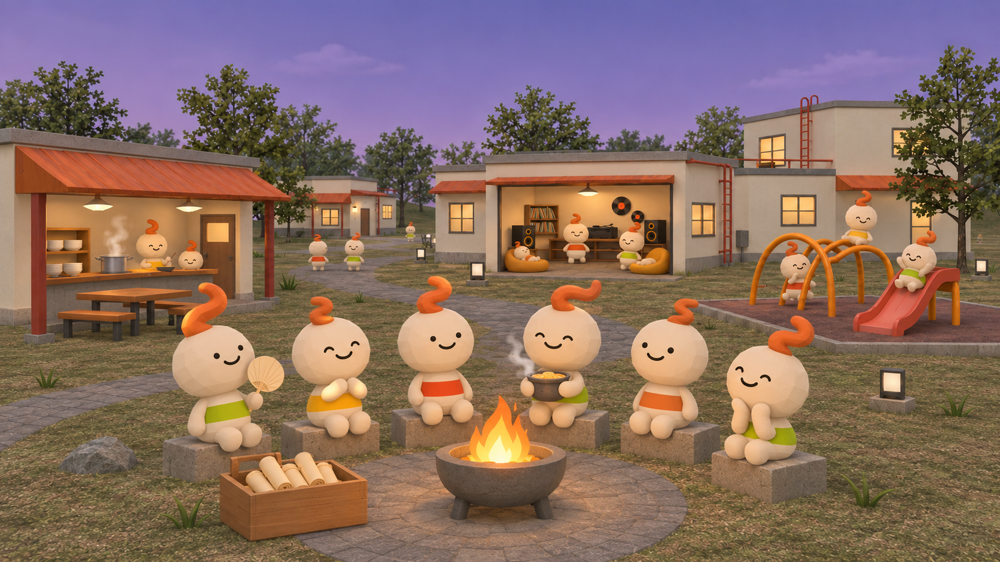
IMG-19 캠퍼 라인업 6종 images/IMG-19.png 로 교체
캠프 네임
입장 즉시 랜덤 이름 — 매움 단계 × 밤의 자연물. “4단계 밤바람”, “은근히 매운 호수”, “까르보 새벽안개”.
꾸미기
플레이어는 크림색 몸과 꼬불 불씨 머리의 친구. 불씨 곡선·가슴 띠 색으로 구별하며 계절 의상에 의존하지 않는다. 일반 플레이 시점은 항상 내 눈높이의 1인칭.
공유 카드
“오늘 2,431명과 함께 태웠어요” + 내 캠퍼 + 내 별자리. 캡처 하나로 스레드 · 인스타에. 1인칭에선 불가능했던 ‘내가 보이는’ 확산.
PEPPO WORLD / RENEWAL PROPOSAL · 27
SCRIPT · 27PEPPO → 나의 플레이어
사용자는 크림색 몸과 꼬불 불씨 머리의 플레이어입니다. 일반 화면은 내 눈높이의 1인칭입니다. 옷보다 불씨 모양과 가슴 띠 색으로 나를 구별하고, 공유 카드에서 내 모습을 기록합니다.
5막 · 공유 카드 · 내 흔적에서 다음 방문으로
‘내가 보이는’ 한 장 — 공유 카드는 이렇게 생겼다
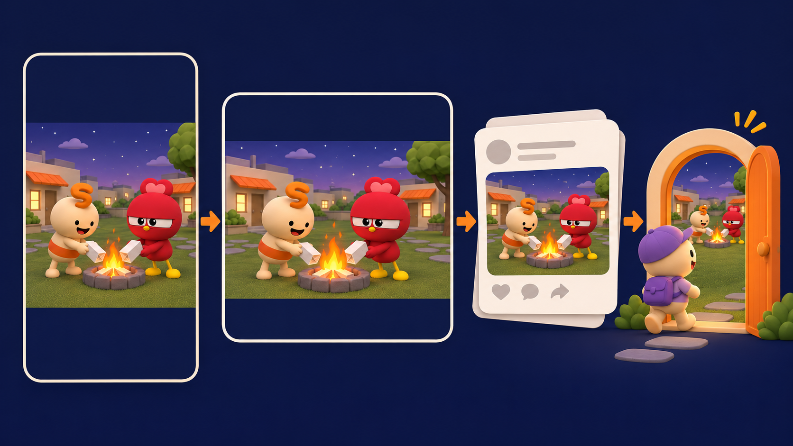
SHARE-01 공유 카드 9:16 · 1:1 시안과 공유 후 친구 입장 images/SHARE-01.png 로 교체
① 내 캐릭터·별자리 카드 생성② 이미지 저장 / 기기 공유③ SNS에 카드 + 입장 링크④ 친구가 링크로 입장
왜 공유하는가
내 캐릭터 + 오늘의 흔적 + 함께한 숫자. 개인 기록을 한 장에 담는다. 9:16·1:1 두 형식 제공. 수치와 카드는 예시이며 공유 의향은 MVP에서 확인한다.
무엇을 측정하는가
카드 생성·공유 버튼 사용·입장 링크 경유 방문을 연결한다. 이미지 저장과 실제 게시를 구분하며, 출처 코드는 개인정보 없이 유입만 집계한다.
PEPPO WORLD / RENEWAL PROPOSAL · 28
SCRIPT · 28내 흔적 → 친구의 방문
이 장은 공유 결과와 과정을 함께 보여줍니다. 내 캐릭터와 오늘의 별자리를 카드로 만들고, 이미지를 저장하거나 기기의 공유 기능으로 보냅니다. SNS에는 입장 링크를 함께 붙입니다. 카드 생성, 공유 버튼 사용, 링크 경유 방문은 각각 구분해 측정합니다. 실제 게시 여부를 이미지 저장으로 추정하지 않습니다.
5막 · 첫 방문 5분
허들 없이 불 앞까지, 저장할 때 로그인
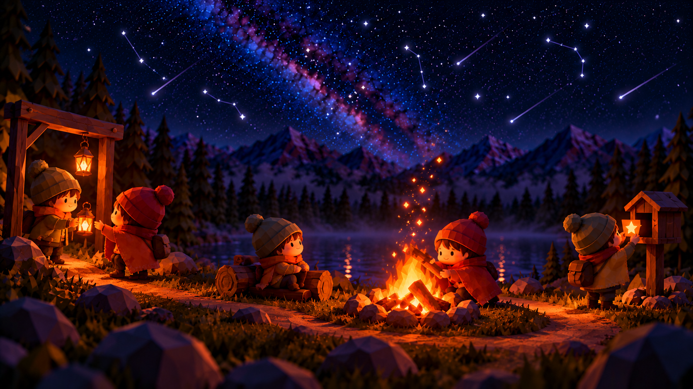
IMG-20 첫 방문 5분 스토리보드 images/IMG-20.png 로 교체
00:00URL 클릭로그인 · 설치 없음
00:05캠퍼 + 캠프 네임“4단계 밤바람”
00:10캠프사이트 입장빈 통나무 자리
00:30장작 넣기첫 불티가 별이 된다
03:00불멍 · 바람 보내기머무는 이유
05:00공유 카드스레드로 확산
D+1내 별자리 저장로그인 가치 제시
PEPPO WORLD / RENEWAL PROPOSAL · 29
SCRIPT · 29캠퍼 → 첫 5분
다섯 번째 막을 사용자의 첫 5분으로 묶겠습니다. URL 클릭, 캠퍼와 이름, 캠프사이트 입장, 첫 장작, 불멍과 바람, 공유 카드 — 여기까지 로그인이 없습니다. 다음 날 내 별자리를 저장하려는 순간에 처음으로 로그인 가치를 제시합니다. 기존 원칙 ‘비로그인 시작, 저장 시 로그인’ 그대로입니다.
여섯 번째 막, Impact. 요소들이 모이면 무엇이 달라지는가. 브랜드와 캐릭터와 사용자가 하나의 불로 이어지고, 효과는 숫자로 남습니다.
6막 · Impact · Brand Bridging ① 채널 브릿지 맵
공식 채널과 월드가 매일 서로를 불러들인다
IN · 채널 → 월드
릴스 · 숏츠밤 10시 불 피우기 15초 루틴 → 링크 스티커
스토리 필터내 캠프 네임 뽑기 → 딥링크 입장
buldak.com 블로그지금 별 수 · 접속 캠퍼 수 라이브 위젯
패키지 QR봉지 · 컵 QR → 시즌 장작 지급
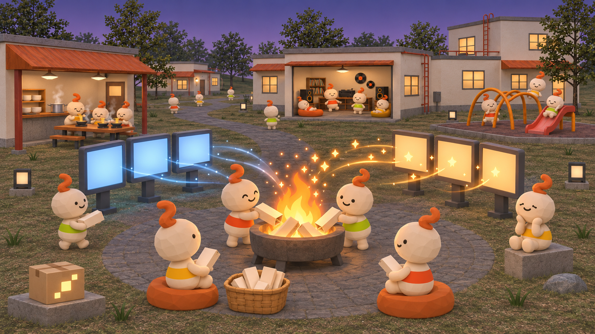
IMG-25 채널 브릿지 맵 images/IMG-25.png 로 교체
월드가 채널의 소재가 되고, 채널이 월드의 입구가 된다 — 매일.
OUT · 월드 → 채널
공유 카드“오늘 N명과 함께 태웠어요” 9:16 · 1:1
오늘의 밤하늘자정 30초 타임랩스 자동 렌더 → 공식 릴스
블로그 · 뉴스룸별 마일스톤 포스트 · 신제품 선공개
캠페인 카피공감 집계 문장 → 카피 · 숏츠 자막
PEPPO WORLD / RENEWAL PROPOSAL · 31
SCRIPT · 316막 Impact → 브릿지 맵
세 번째 Needs, 브랜드 브릿징입니다. 우리는 이것을 채널 단위로 정의했습니다. 왼쪽 IN은 공식 채널이 월드의 입구가 되는 네 가지 — 릴스·숏츠의 밤 10시 루틴, 스토리 필터, 블로그의 라이브 위젯, 패키지 QR. 오른쪽 OUT은 월드가 채널의 소재가 되는 네 가지 — 공유 카드, 오늘의 밤하늘 타임랩스, 마일스톤 포스트, 캠페인 카피. 매일 서로를 불러들입니다.
6막 · Impact · Brand Bridging ② 콘텐츠 · 포맷 · 주기
브릿지 8개 — 무엇을, 어떤 포맷으로, 얼마나 자주
방향
채널
콘텐츠
포맷
주기
연결 지표
IN 채널→월드
인스타 릴스 · 유튜브 숏츠
“오늘 밤 10시 불 피우기” — 불 지킴이 PEPPO가 큰 장작을 꺼내는 15초 루틴, 링크 스티커로 입장
9:16 · 15초 · 자동 렌더
매일 21:30
공유 경유 유입
인스타 스토리 필터
“내 캠프 네임 뽑기” AR 필터 → 결과 화면에 딥링크, 같은 이름으로 월드 입장
스토리 필터 · 딥링크
상시
신규 입장
buldak.com 블로그
PEPPO WORLD 소개 글에 ‘지금 밤하늘 별 수 · 접속 중 캠퍼 수’ 라이브 위젯 임베드
iframe 위젯
실시간
블로그 → 월드 CTR
제품 패키지 QR
라면 봉지 · 컵 QR → ‘시즌 장작’ 1개 지급(까르보 장작, 핵불 장작). 제품이 월드의 소재가 된다
QR · 한정 장작
시즌별
QR 스캔 → 입장
OUT 월드→채널
공유 카드 → 스레드 · 인스타
“오늘 N명과 함께 태웠어요” + 내 캠퍼 + 내 별자리, 캡처 한 번에 9:16 · 1:1 두 포맷 생성
1080×1920 · 1080×1080
사용자 행동 시
공유 카드 생성 수
공식 릴스 · 숏츠
‘오늘의 밤하늘’ — 자정에 그날 쌓인 별을 30초 타임랩스로 자동 렌더, 공식 계정 업로드
9:16 · 30초 · 자동
매일 00:10
릴스 조회 · 저장
buldak.com 블로그 · 뉴스룸
별 마일스톤(10만 · 100만) 달성 포스트 + 신제품 선공개, 완전 연소 캠퍼 명예의 전당
포스트 · 보도자료
마일스톤
보상 교환율
캠페인 카피 · 숏츠 자막
호숫가 공감 집계가 만든 문장(“오늘 8,120명이 바람을 보냈다”)을 다음 캠페인 카피 · 자막으로 채택
카피 · 자막 소스
월간
연상 일치도
메시지 층위는 하나 — BULDAK ‘태워서 푼다’ → PEPPO ‘불을 지킨다’ → USER ‘함께 태운다’. 위 8개 브릿지는 그 메시지가 채널을 건너는 실제 통로다. 보상 · 편성은 브랜드팀 확인 전 가안.
PEPPO WORLD / RENEWAL PROPOSAL · 32
SCRIPT · 32채널 → 운영
여덟 개 브릿지의 담당 콘텐츠와 주기, 지표를 정리했습니다. 이 표는 운영 검토용입니다. 발표에서는 매일 생산되는 밤하늘 기록과 공유 카드가 다음 방문을 부른다는 점만 짚겠습니다.
6막 · Impact · 기대효과
불이 도는 구조 — 한 바퀴 돌 때마다 지표가 쌓인다
01
들어온다
URL 하나, 10초 안에 불 앞
02
함께 태운다
행동 4 · 불멍 · 기척
03
별이 남는다
내 별자리 · 캠프의 하늘
04
돌아온다
밤 10시 · 희소 자리 · 시간
05
퍼뜨린다
공유 카드 · 오늘의 밤하늘
06
현실로 온다
별 마일스톤 → 보상 · 신제품
CORE
관계
캐릭터를 아는 경험에서 관계를 맺는 경험으로
각 단계가 남기는 지표
01들어온다신규 입장 · 블로그 CTR
02함께 태운다CCU 피크 · 장작/인 · 불멍 체류
03별이 남는다로그인 전환 · 점유율
04돌아온다D1/D7 재방문
05퍼뜨린다공유 카드 수 · 릴스 조회
06현실로 온다보상 교환율 · 연상 일치도
한 바퀴 = 한 사용자의 하루. 바퀴가 빨리 돌수록 하늘의 별이 늘고, 별이 늘수록 바퀴가 더 빨리 돈다.
PEPPO WORLD / RENEWAL PROPOSAL · 33
SCRIPT · 33브릿지 → 플라이휠
이제 전체를 한 바퀴로 보겠습니다. 들어온다, 함께 태운다, 별이 남는다, 돌아온다, 퍼뜨린다, 현실로 온다 — 그리고 다시 들어옵니다. 한 바퀴가 한 사용자의 하루이고, 바퀴가 돌 때마다 오른쪽의 지표가 하나씩 쌓입니다. 바퀴가 빨리 돌수록 하늘의 별이 늘고, 별이 늘수록 바퀴가 더 빨리 돕니다. 가운데는 첫 번째 Needs, ‘관계’입니다.
6막 · Impact · KPI 대시보드
세 층위 열 개 지표 — 한눈에 보는 측정 체계
선행행동 지표 · 매일
CCU 피크캠프사이트별 최대 동시접속실시간 집계
자리 점유율100석 중 점유 · 대기 발생 횟수시간대별
장작/인1인당 장작 넣기 횟수세션 기준
불멍 체류불멍 모드 평균 체류 시간분 단위
핵심관계 지표 · 주간
D7 재방문첫 방문 코호트의 7일째 재방문 비율디바이스 ID 기준 · 비로그인 포함
로그인 전환별자리 저장 시점의 Guest → Login 전환율저장 시점
공유 카드생성 수 · 공유 경유 유입 비율UTM
결과브랜드 지표 · 월간
호감도 변화사전/사후 PEPPO · 브랜드 짧은 설문설문
연상 일치도‘태워서 푼다’ 메시지 연상 — 참여자 vs 비참여자대조군 비교
보상 교환율별 마일스톤 보상의 실제 교환 비율현실 연결
목표치는 MVP 운영 2주 후 설정 · 분모 · 중복 제거 · 동의 기반 식별 · 관찰 기간은 측정 명세에서 확정 · 시장 참고치(사흘 60만, 방 100×100)는 벤치마크일 뿐 목표가 아님
PEPPO WORLD / RENEWAL PROPOSAL · 34
SCRIPT · 34플라이휠 → KPI
그 지표들을 세 층위로 정리하면 열 개입니다. 매일 보는 선행 지표 넷 — 동시접속, 자리 점유율, 1인당 장작, 불멍 체류. 주간의 핵심 지표 셋 — D7 재방문, 로그인 전환, 공유 카드. 월간의 결과 지표 셋 — 호감도 변화, 메시지 연상 일치도, 보상 교환율. 목표치는 임의로 두지 않고 MVP 운영 2주 뒤에 설정합니다. 시장 참고치는 벤치마크일 뿐 목표가 아닙니다.
6막 · Impact · 측정 설계
열 개 지표는 어떻게 재나 — 식별 기준과 한계
지표
측정 방법
식별 기준
한계와 보정
CCU 피크 · 자리 점유율
서버 세션 카운트, 캠프사이트별 1분 단위
세션 (로그인 불필요)
탭 중복 → 동일 디바이스 ID 병합
장작/인 · 불멍 체류
행동 이벤트 로그 (장작·바람·돋우기·라면), 불멍 모드 진입/이탈 타임스탬프
디바이스 ID + 세션
백그라운드 탭은 visibility 이벤트로 제외
D7 재방문
첫 방문 시 1st-party 쿠키 + localStorage에 디바이스 ID 발급(동의 배너). 7일째 같은 ID 재접속이면 D7 재방문. 로그인 시 계정에 ID 병합
디바이스 ID 기준 — 로그인 없이도 측정
브라우저 저장소 정책·동의 거부·기기 변경에 따른 누락을 별도 보고. 계정 병합과 보관 기간은 개인정보 검토 후 확정
로그인 전환
별자리 저장 버튼 노출 → 로그인 완료 퍼널
디바이스 ID → 계정
저장 버튼 노출 수를 분모로 (전체 방문 아님)
공유 카드
카드 생성 이벤트 수 + 카드에 심은 UTM/딥링크로 공유 경유 유입 수
생성: 디바이스 ID · 유입: UTM
이미지 저장 후 수동 업로드는 UTM 유실 → 카드에 짧은 입장 코드 인쇄로 보정
호감도 변화
입장 직후 1문항 · 7일 후 재방문 시 1문항 (월드 내 팝업)
디바이스 ID (동일인 전후 비교)
응답 편향 → 외부 패널 설문으로 교차 검증(월간)
연상 일치도
‘태워서 푼다’ 자유 연상 설문 — 참여자(월드 내) vs 비참여자(브랜드 채널 팔로워 패널)
참여 여부로 군 분리
자기선택 편향 → 인구통계 가중
보상 교환율
별 마일스톤 보상 쿠폰 코드 발급 수 대비 사용 수
쿠폰 코드
오프라인 사용은 POS 연동 또는 코드 입력 집계
원칙: 비로그인 사용자도 디바이스 ID로 추적하되 동의 기반·식별 불가 정보만. 로그인 전환 시 ID를 계정에 병합해 전후 연속성을 확보. 모든 지표의 분모와 중복 제거 규칙은 MVP 착수 1주차 측정 명세에서 확정.
PEPPO WORLD / RENEWAL PROPOSAL · 35
SCRIPT · 35효과 → 측정
측정은 동의한 익명 식별자를 기준으로 설계합니다. D7은 첫 방문 코호트가 7일째 돌아오는 비율로 정의합니다. 기기 변경과 저장소 삭제에 따른 누락은 한계로 보고합니다. 공유는 카드 생성과 링크 유입을 분리하고, 조사 지표는 참여군과 비교군의 조건을 맞춰 검증합니다. 세부 구현은 개인정보 검토 후 확정합니다.
마지막 막, Roadmap. 어떻게 시작하는가. 불 하나로 검증하고, 캠프 전체로 넓힙니다.
7막 · Roadmap · MVP 및 단계별 확장
불 하나로 검증하고, 캠프 전체로 넓힌다
IMG-23 하나의 불에서 캠프 전체로 images/IMG-23.png 로 교체
MVP · 6–8주 · 경험 검증
캠프파이어 1 + 행동 4 + 사운드 + 캠퍼
캠프사이트 N × 100석 · 장작 · 바람 · 돋우기 · 라면 · 불멍 모드 · 캠프 네임 · 공유 카드 · 별 누적(저장 시 로그인)
판단: CCU · 체류 · 공유 발생
PHASE 2 · 관계 강화
스포크 연결
호숫가 자리(공감 집계) · 야식 자리 · 언덕 무대(밤 10시) · My Camp 컬렉션 · 삭제 경로 · 주간 공동 목표
판단: D7 · 로그인 전환
PHASE 3 · 브랜드 확장
숲길과 현실
로드뷰 탐색 노드 · 이스터에그 · 시즌 장작 · 별 마일스톤 → 실물 보상 · 오프라인 연결 · 글로벌 언어 · 메신저/미니앱
판단: 연상 일치도 · 보상 교환
PEPPO WORLD / RENEWAL PROPOSAL · 37
SCRIPT · 377막 Roadmap → MVP
MVP는 6–8주, 캠프파이어 하나와 행동 넷, 사운드, 캠퍼만 만듭니다. 판단 기준은 동시접속과 체류와 공유 발생입니다. 2단계에서 호숫가와 야식 자리, 언덕 무대, My Camp를 붙이고 D7과 로그인 전환으로 판단합니다. 3단계에서 숲길 탐색과 시즌 장작, 실물 보상, 오프라인과 글로벌로 넓히고 연상 일치도와 보상 교환으로 판단합니다.
7막 · Roadmap · 리스크 · 결정 · 다음 2주
결정할 것과 2주 안에 할 것
리스크와 대응
리스크
대응
트렌드 추종으로 보일 가능성
무대 · 행위 · 정서 · 시간 · 흔적이 전부 고유. 대외 커뮤니케이션에서 참고 서비스 언급 금지
형식 복제(수일 내 300+)
IP 행동 · 사운드 · 실물 보상 · 캠페인 연동 — 개인이 복제할 수 없는 영역에 집중
유행 소멸
캠프파이어는 상시 허브, 시간 이벤트 · 시즌 장작 · 숲길 탐색이 재방문 장치
부정 텍스트 · 개인정보
공개 텍스트 없음, 장작 내용 비공개 · 비저장
동시접속 급증
캠프사이트 단위(100명) 수평 확장, 대기열을 UX로 흡수
결정 사항
MVP 범위: 캠프파이어 허브 단독 시작 vs 원안(노드 월드 포함)
아바타 정책: 캠퍼(더미 기반) 확정
PEPPO 행동양식 · PEPPO Word 정의
로그인 방식 · 저장 범위
현실 보상 항목(브랜드팀)
다음 2주
캠프사이트 1곳 플레이어블 프로토타입(웹, 행동 4, 20석)
캠퍼 스타일 프레임 3안 + 캠프 네임 생성 규칙
사운드 데모 2트랙(장작 · 풀벌레 / 보글보글)
내부 테스트 30명 → CCU · 체류 · 행동 분포 관찰
현행 사이트 방문 · 재방문 데이터 재확인
PEPPO WORLD / RENEWAL PROPOSAL · 38
SCRIPT · 38MVP → 결정과 2주
오늘 결정해 주셔야 할 것은 다섯 가지입니다. MVP 범위를 허브 단독으로 시작할지, 캠퍼 아바타 정책, PEPPO 행동양식과 PEPPO Word, 로그인과 저장 범위, 그리고 현실 보상 항목. 결정되면 2주 안에 캠프사이트 한 곳의 플레이어블 프로토타입과 캠퍼 3안, 사운드 데모 2트랙을 만들어 내부 30명 테스트까지 돌립니다. 리스크는 왼쪽 표로 정리했고, 트렌드 추종으로 보일 가능성에 대한 대응은 ‘무대·행위·정서·시간·흔적이 전부 고유하다’는 것, 그 자체입니다.
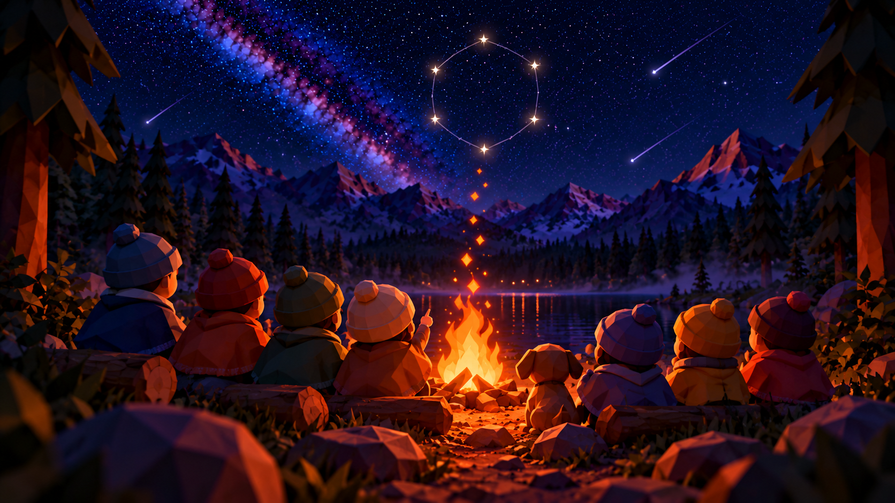
IMG-24 별자리 하늘 images/IMG-24.png 로 교체
마무리
태운 것은 별이 된다
관계는 ‘함께 한 것’에서 생긴다. 불닭의 ‘태우다’를 ‘함께’로 넓히면, 캐릭터를 아는 경험은 캐릭터와 관계를 맺는 경험이 된다.
Needs 13개 전부 응답복제 불가한 3원칙측정 가능한 10개 지표
PEPPO WORLD / RENEWAL PROPOSAL · 39
SCRIPT · 39결정 → 마무리
처음의 세 단어로 돌아오겠습니다. 관계, 흔적, 효과. 관계는 ‘함께 한 것’에서 생깁니다. 불닭의 ‘태우다’를 ‘함께’로 넓히면, 캐릭터를 아는 경험은 캐릭터와 관계를 맺는 경험이 됩니다. 흔적은 별이 되어 남고, 효과는 열 개의 지표로 측정됩니다. 태운 것은 별이 됩니다. 감사합니다.